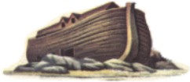
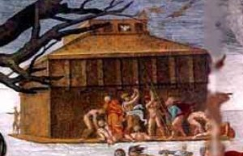
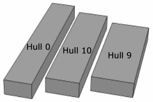
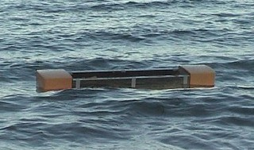

Why Such a Long Hull?
May 2005 | Home
| Menu
Designed for Wind Generated Waves?
|
Noah's Ark crests a wave in high seas. (2500BC)
The rain has stopped and the sun is shining - a rare photo opportunity in the
5 month voyage. The timber darkened by the thick resinous coating and
months at sea, the ark rides headlong with a windstorm headed to the right
of the picture.
Hogging and slamming loads are a good test for the timber hull. Wind
generated waves are quite different to the gentle passing of a deep sea
tsunami.
The serious winds came towards the end of the voyage.
(Genesis 8:1)
Image Tim Lovett 2004
|
 |
A long hull
The proportions of Noah's Ark are explicitly stated in Genesis 6:15; 300 x 50 x 30
cubits. The vessel is six times as long as it is wide, an L/B ratio of 6.
A typical modern ship might have L/B of 6 to 8, and up to 10 for a narrow, high
speed vessel. But these are designed to travel forwards, whereas Noah's Ark
simply had to float, so one would think.
|
"I never realized it was so long" Popular
depictions of the ark often show a length to breadth ratio less than
half the Biblical Ark. The depiction in the Sistine Chapel looks extreme
but is probably the end view. More often artists show an L/B ratio of around
 three or
four.
|
 |
Shorter is Easier to Build
If God was planning to intervene during the voyage and miraculously suspend
the Ark from the full effect of the waves, then why did he make Noah do extra
work building a long hull? (See Miracles and
Noah's Ark) The shape with the least amount of wood for the same volume is a
cube. On top of this, as the hull gets longer it needs to be built extra strong
to withstand bending forces. All this points strongly to a preference for a
shorter hull.
Hong's number nine hull
Hong's seakeeping analysis assumes a confused sea. "...the waves came
from all directions with the same probability."
Their results show that Noah's Ark does not have unbeatable proportions for a
random sea. In fact, according to their own numbers, there is no weighting
scheme that can put Noah's Ark (#0) ahead of hull#9, and in most cases hull#10 also.
In terms of roll stability, it is hull#9 that deserves the title as "the
most stable design". See
Comments on the Hong Paper
Why is hull 9 consistently superior? It outperforms Noah's Ark
in both stability and hull strength, which means that it could ride bigger waves
and it would be easier to build. Considering that these are the usual objections
to the construction of the Ark (couldn't handle the waves, too hard to make), it
seems surprising that the ark does not appear to be optimized on these issues
alone.
It is true that Biblical proportions are clearly adequate, Noah's Ark
consistently ranks near the top in almost any weighting scheme and never below
7th place (pure seakeeping). But the extra effort required to build the longer
hull seems surprising. There is certainly a lot less wood in hull 9. (In reality
even more exaggerated because space is lost to the extra wood). In most
weighting schemes hull 10 is also ahead of the Biblical Ark.
Even the optimal weighting of seakeeping (3.88), strength (3.11)
and roll (0.289) cannot bring Noah's Ark out on top. From this information one
would think the ark should have been a little shorter. After all, lifeboats
aren't so long and narrow.

All with the same ceiling height, the shorter hulls are
better than Noah's Ark in a random sea,
according to the Hong study.
Hull 9 doesn't look like a boat. Certainly less like a boat than Noah's Ark
(Hull 0). But a random sea is more like a life-raft situation, so if the flood
waves were from every direction at the peak (design) state, then Noah's Ark
should have been shorter. But it wasn't, why?
Why so long?
A longer vessel has superior performance if it stays perpendicular to the
waves, riding over or cutting through the crests rather than turning side-on. This gives a
better ride, less pitching and easier motions than the shorter hulls. There is
a problem however, waves will naturally try to turn long things sideways
(broadside to the waves). This is called
broaching and is caused by
the turning effect of the waves (wave
yaw).

Broadside to the waves
In a beam sea the Hong study ranks Noah's Ark down in fifth place of the 13
hulls (roll stability). To avoid being turned sideways (broaching), the Ark would need to be
controlled. Wind is probably the only passive method of steering the vessel. In
Genesis 8:1 a wind that appears to be of global scale is implicated in the water
receding stage of the flood. Expecting the Ark to be on high ground for the most
devastating early tsunami waves, the worst case sea state would likely be well
developed regular waves with consistent wind (due to unlimited fetch and global
scale wind).
- Since Noah's Ark has a L/B ratio of six, it must have been
controllable.
- With limited manpower for navigation, passive directional control would be
needed.
- The logical passive method is to use wind to steer the vessel in the
waves. This requires a relatively regular sea, not a pure confused sea.
- Noah's Ark has excellent proportions for this mode of operation, a longer
hull riding more comfortably through the waves.
However, Noah's Ark is not a dedicated narrow vessel either. There is enough
width and a suitable B/D ratio to handle some mixed wave directions, and even a
beam sea situation at times. It does seem to point in a general sense to a sea
dominated by a substantial wind, like the wind in Genesis 8:1.
What if the waves were small anyway?
Genesis 6:15 runs counter to this idea. If the waves had been trivial then
the ark could have been built more quickly and easily if it were closer to a
cube (maximum volume to surface area ratio). With a 3 deck specification, this
points to hull#9 or hull#10. A long hull is more difficult to build since it
must handle bending loads as it rides the waves. A shorter hull (of the same
volume) would use less wood and less labor. The long hull is also more difficult
for launching and beaching loads. The Biblical Ark was long and relatively tall,
an overkill for a trivial sea that never gave it a workout.
Besides, there should have been other boats around, so if the waves never
whipped up a bit why didn't some fishermen survive? (Unless of course they were
caught in the initial mega-tsunamis.)
What about tsunamis?
Early activity as the
sea began to cover the land may have been far too severe for the Ark. However,
if the Ark was constructed higher up, it would be launched near the climax of
the floodwaters, and in deep water tsunamis
are not likely be a threat. In fact ships cannot detect a
passing tsunami (tidal wave) in deep water. The devastating Asian tsunami in
December 2004 was measured by satellite to be only 600mm (2 ft) high in the deep
ocean. Considering its wavelength measured in kilometers, this wave would pass
under a ship undetected. For more information see Waves.
"Design" waves
A ship must be built to handle the worst weather it might encounter. In the
several months Noah's Ark was at sea there may have been calm periods and some
heavy weather. Calm periods we ignore, it is the rough seas that the Ark must be
built for. So pictures of waves and talk of slamming loads and bending moments
does not imply that the passengers spent the entire time holding onto their
cages for dear life. There's a good chance they had to bed down some of the time
though, which is the advantage of keeping the animals in "nests" rather than big
open areas.
Conclusion
The proportions of the Ark indicate the vessel was probably designed for
waves generated in the Genesis 8:1 wind. It would have missed the early
onslaught by being launched from high ground, and in deep water the tsunami risk
is low. The added difficulty of building a long hull indicates that the waves
were not trivial, so the ark should be treated as a seagoing ship. An
important design criteria in this line of reasoning is to ensure passive broach
avoidance - utilizing the wind.
References
1. Ship Design for efficiency and economy: 2nd Ed: H Schneekluth, Butterworth
Heinemann Oxford 1998
www.worldwideflood.com